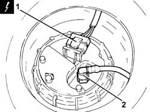
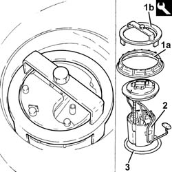
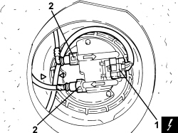

1040A70 SUBMERGED PUMP ASSEMBLY COMPLETE WITH LEVEL GAUGE CONTROL - R + R
- Path
- Procedures > 10 ENGINE > 1040 FUEL TANK AND PIPES > 1040A FUEL TANK AND COMPONENTS > 1040A70 SUBMERGED PUMP ASSEMBLY COMPLETE WITH LEVEL GAUGE CONTROL - R + R
- Kind
- repair procedure (removal / refitting; the operation number is the code)
- Applies to
- all engines; all production periods
- Interactive page
- https://sloeber94.github.io/elrnDB-fCrm/en/#/194000289
Applies to: engines: 1.8, 2.2; all production periods
 Removing
Removing
 Refitting
Refitting- Make sure that the ignition key is in the OFF position, then disconnect the battery terminal (-).
Description | Connector | |
|---|---|---|
- | Battery |
Op. 7050A20 ONE-PIECE REAR SEAT CUSHION - R.R.
Op. 7050A33 REAR SEAT CUSHION SOUND DEADENING DEVICE/SPACER - R R
Applies to: engines: 1.8, 2.2; all production periods
1. Use tool to release and remove the access cover to the fuel pump assembly.

Applies to: engines: 1.8, 2.2; all production periods
1. Disconnect the electrical connection from the submerged pump assembly complete with level gauge.
Description | Connector | |
|---|---|---|
1 | Fuel pump and level gauge |
2. Disconnect the rapid connector for the rear fuel supply pipe, submerged pump assembly side complete with level gauge.

Applies to: engines: 1.8, 2.2; all production periods
1. Undo the ring nut (1a) using the tool (1b).
Tool | Description | Function | Validity |
|---|---|---|---|
1870736000 | Spanner | Loosen/tighten ring nut securing submerged pump assembly complete with level gauge |
2. Remove the submerged fuel assembly complete with level gauge control.
3. Remove the O-ring.

Applies to: engines: 1.8, 2.2; all production periods
Refitting
Removing1. Place a new O-Ring seal in the housing on the fuel tank collar and make sure that it is correctly positioned.
2. Position the submerged pump assembly complete with level gauge control in its housing.
3. Tighten the ring nut (3a) securing the submerged pump assembly complete with level gauge using the tool (3b).
Tool | Description | Function | Validity |
|---|---|---|---|
1870736000 | Spanner | Loosen/tighten ring nut securing submerged pump assembly complete with level gauge |
Applies to: engines: 1.8, 2.2; all production periods
- Connect the rapid connector for the rear fuel supply pipe, submerged pump assembly side complete with level gauge.
- Connect the electrical connection to the submerged pump assembly complete with level gauge.
- Refit the access cover for the submerged fuel assembly complete with level gauge control.
Op. 7050A33 REAR SEAT CUSHION SOUND DEADENING DEVICE/SPACER - R R
Op. 7050A20 ONE-PIECE REAR SEAT CUSHION - R.R.
- Connect the negative battery terminal.
Applies to: engines: 1.9 JTD 8v, 1.9 JTD 16v, 2.4 JTD 20v; all production periods
Removing
Refitting- Make sure that the ignition key is in the OFF position, then disconnect the battery terminal (-).
Description | Connector | |
|---|---|---|
- | Battery |
Applies to: engines: 1.9 JTD 8v, 1.9 JTD 16v, 2.4 JTD 20v; all production periods
1. Use tool to release and remove the access cover to the fuel pump assembly.

Applies to: engines: 1.9 JTD 8v, 1.9 JTD 16v, 2.4 JTD 20v; all production periods
1. Disconnect the electrical connection from the submerged pump assembly complete with level gauge.
Description | Connector | |
|---|---|---|
1 | Fuel pump and level gauge |
2. Disconnect the rapid connectors for the fuel supply and return pipes, submereged pump assembly side complete with level gauge.

Applies to: engines: 1.9 JTD 8v, 1.9 JTD 16v, 2.4 JTD 20v; all production periods
1. Undo the ring nut (1a) using the tool (1b).
Tool | Description | Function | Validity |
|---|---|---|---|
1870736000 | Spanner | Loosen/tighten ring nut securing submerged pump assembly complete with level gauge |
2. Remove the submerged fuel assembly complete with level gauge control.
3. Remove the O-ring.

Applies to: engines: 1.9 JTD 8v, 1.9 JTD 16v, 2.4 JTD 20v; all production periods
Refitting
Removing- Place a new O-Ring seal in the housing on the fuel tank collar and make sure that it is correctly positioned.
- Position the submerged pump assembly complete with level gauge control in its housing.
- Tighten the ring nut securing the submerged pump assembly complete with level gauge using the tool.
Tool | Description | Function | Validity |
|---|---|---|---|
1870736000 | Spanner | Loosen/tighten ring nut securing submerged pump assembly complete with level gauge |
- Connect the rapid connectors for the fuel supply and return pipes, submereged pump assembly side complete with level gauge.
- Connect the electrical connection to the submerged pump assembly complete with level gauge.
- Place the access cover to the submerged pump assembly complete with level gauge back in its housing and secure it using the bolts.
Op. 7050A20 ONE-PIECE REAR SEAT CUSHION - R.R.
- Connect the negative battery terminal.
Topics linked from this page (4)
- 7050A20 ONE-PIECE REAR SEAT CUSHION - R.R.
- 7050A33 REAR SEAT CUSHION SOUND DEADENING DEVICE/SPACER - R R
- A001 BATTERY
- N040 FUEL PUMP AND LEVEL GAUGE
Topics that link to this page (20)
- B010 ENGINE DOES NOT START (UNDER ANY CIRCUMSTANCES)
- B013 ENGINE STARTS WITH DIFFICULTY
- B020 ENGINE STARTS, AND CUTS OUT STRAIGHT AWAY
- D001 ENGINE NOT RUNNING SMOOTHLY / (HESISTANT)
- D002 ENGINE NOT RUNNING SMOOTHLY / (LOSING POWER)
- D003 ENGINE NOT RUNNING SMOOTHLY / (IRREGULAR OPERATION)
- D005 ENGINE DOES NOT PRODUCE BEST PERFORMANCE
- D010 ENGINE IDLE IRREGULAR
- D014 ENGINE GOING OFF ON IDLING (THEN RESTARTING)
- D020 ENGINE CUTS OUT WHILST RUNNING (THEN NOT RESTARTING)
- D021 ENGINE CUTS OUT WHILST RUNNING (THEN RESTARTS)
- K020 FUEL LEVEL GAUGE NOT WORKING
- K021 FUEL RESERVE WARNING LIGHT NOT WORKING
- K125 DISPLAY DOES NOT SHOW RANGE ON TRIP MODULE
- K140 FUEL RESERVE WARNING LIGHT ON (WITH HIGHER LEVEL)
- N009 TRIP COMPUTER WRONG INDICATIONS
- Y002 P0087 - PRESSURE ON FLUTE
- Y003 P0088 - PRESSURE ON FLUTE
- 1040AB SUBMERGED FUEL PUMP CHECK
- 1040A66 FUEL LEVEL GAUGE FOR SUBMERGED PUMP ASSEMBLY - REPLACE.